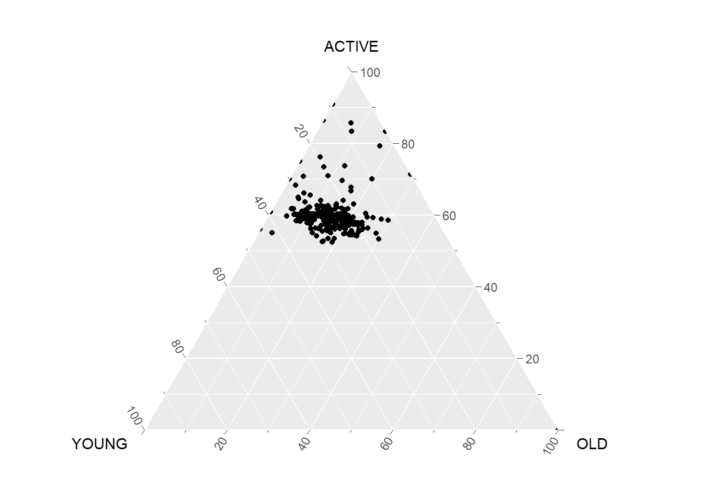
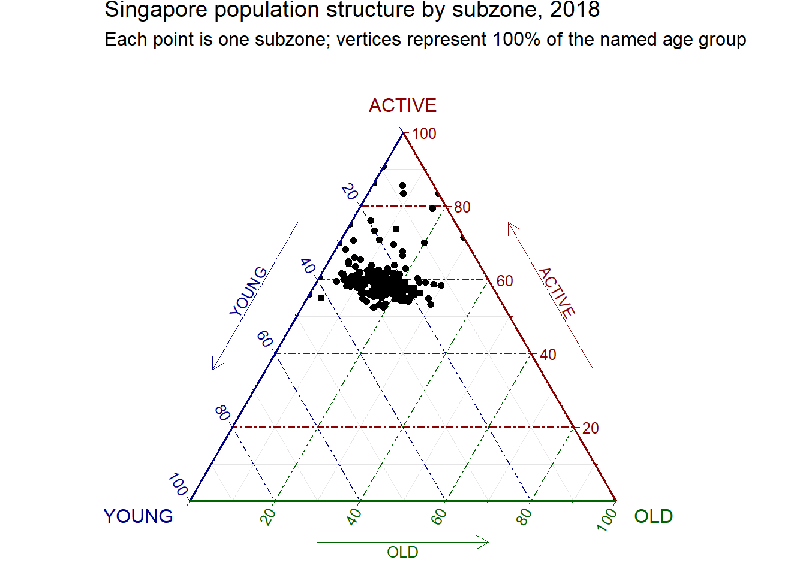
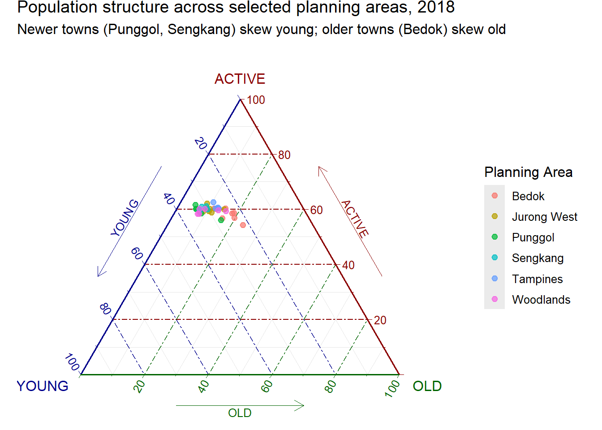
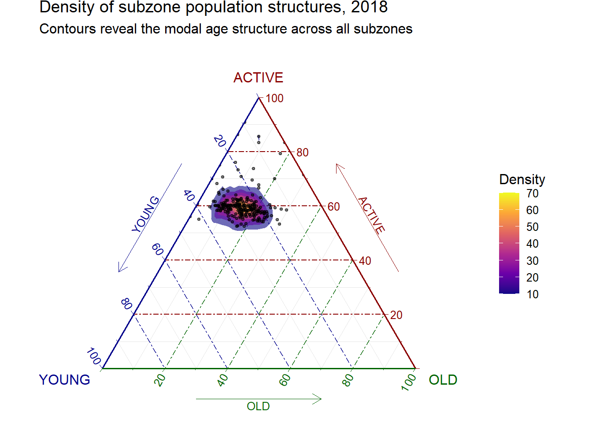

pacman::p_load(plotly, ggtern, tidyverse, knitr)Chapter 13: Creating Ternary Plot with R
Hands-on Exercise 5
13 Creating Ternary Plot with R
13.1 Overview
Ternary plots display three-part compositional data, meaning data where the parts must sum to a fixed total such as 1 or 100%. The display is an equilateral triangle with each side scaled from 0 to 1 and each vertex representing 100% of one component. This chapter covers static ternary plots with ggtern and interactive ones with plotly, then explores five design alternatives.
13.2 Installing and Launching R Packages
Three R packages are required:
- ggtern, a
ggplot2extension specially designed for ternary diagrams - plotly, used here for its native
scatterternarytrace type which is preferred overggplotly()conversion because the latter does not fully translateggterngeometries - tidyverse for data import and shape transformation
knitr is also loaded so kable() can produce clean previews.
NoteThings to learn from the code chunk above
ggtern masks several ggplot2 functions when loaded, because the package overrides standard ggplot internals to support the triangular coordinate system. If conflicts arise, explicit namespacing with ggplot2:: or ggtern:: resolves them.
13.3 Data Preparation
13.3.1 The Data
The dataset respopagsex2000to2018_tidy.csv is from the Singapore Department of Statistics. It records resident population by planning area, subzone, age group, sex, and year from 2000 to 2018.
13.3.2 Importing Data
pop_data <- read_csv("data/respopagsex2000to2018_tidy.csv")
kable(head(pop_data))| PA | SZ | AG | Year | Population |
|---|---|---|---|---|
| Ang Mo Kio | Ang Mo Kio Town Centre | AGE0-4 | 2011 | 290 |
| Ang Mo Kio | Ang Mo Kio Town Centre | AGE0-4 | 2012 | 270 |
| Ang Mo Kio | Ang Mo Kio Town Centre | AGE0-4 | 2013 | 260 |
| Ang Mo Kio | Ang Mo Kio Town Centre | AGE0-4 | 2014 | 250 |
| Ang Mo Kio | Ang Mo Kio Town Centre | AGE0-4 | 2015 | 260 |
| Ang Mo Kio | Ang Mo Kio Town Centre | AGE0-4 | 2016 | 250 |
13.3.3 Preparing the Data
To plot a ternary diagram, the data must be reshaped from long to wide format and three compositional measures derived: YOUNG (under 25), ACTIVE (25 to 64), and OLD (65 and above).
WarningA bug in the R4VA recipe worth fixing
The R4VA tutorial derives the three measures using positional column indexing:
mutate(YOUNG = rowSums(.[4:8])) %>%
mutate(ACTIVE = rowSums(.[9:16])) %>%
mutate(OLD = rowSums(.[17:21]))This assumes the columns from pivot_wider() come out in natural age order, but they do not. The age bands in the source data are named AGE0-4, AGE05-9, AGE10-14, and so on. After pivot_wider(), the columns appear in first-appearance order rather than alphabetical or natural age order. Because AGE05-9 first appears far down the source file, it ends up at column 13 instead of column 5.
Applied to the columns as they actually come out, the positional recipe produces:
- YOUNG (cols 4 to 8) sums
AGE0-4+AGE10-14+AGE15-19+AGE20-24+AGE25-29. Children aged 5 to 9 are missing, and 25-to-29-year-olds are mistakenly included. - ACTIVE (cols 9 to 16) sums
AGE30-34throughAGE45-49, thenAGE05-9(column 13), thenAGE50-54throughAGE60-64. Children aged 5 to 9 are mixed into the working-age group, and 25-to-29-year-olds are missing. - OLD (cols 17 to 21) sums
AGE65-69throughAGE85over. This one is correct.
A quick verification: for Ang Mo Kio Town Centre in 2018, the tutorial recipe reports YOUNG = 1,360. Adding the actual under-25 bands gives 180 + 270 + 320 + 300 + 260 = 1,330, not 1,360. The 30-person discrepancy is AGE25-29 (300) being wrongly included while AGE05-9 (270) is excluded.
The fix is to select columns by name using rowSums(across(c(...))). The backticks handle hyphens in the column names.
agpop_mutated <- pop_data %>%
mutate(Year = as.character(Year)) %>%
pivot_wider(names_from = AG, values_from = Population) %>%
mutate(
YOUNG = rowSums(across(c(`AGE0-4`, `AGE05-9`, `AGE10-14`, `AGE15-19`, `AGE20-24`))),
ACTIVE = rowSums(across(c(`AGE25-29`, `AGE30-34`, `AGE35-39`, `AGE40-44`, `AGE45-49`,
`AGE50-54`, `AGE55-59`, `AGE60-64`))),
OLD = rowSums(across(c(`AGE65-69`, `AGE70-74`, `AGE75-79`, `AGE80-84`, `AGE85over`))),
TOTAL = YOUNG + ACTIVE + OLD
) %>%
filter(Year == 2018) %>%
filter(TOTAL > 0)
kable(head(agpop_mutated))| PA | SZ | Year | AGE0-4 | AGE10-14 | AGE15-19 | AGE20-24 | AGE25-29 | AGE30-34 | AGE35-39 | AGE40-44 | AGE45-49 | AGE05-9 | AGE50-54 | AGE55-59 | AGE60-64 | AGE65-69 | AGE70-74 | AGE75-79 | AGE80-84 | AGE85over | YOUNG | ACTIVE | OLD | TOTAL |
|---|---|---|---|---|---|---|---|---|---|---|---|---|---|---|---|---|---|---|---|---|---|---|---|---|
| Ang Mo Kio | Ang Mo Kio Town Centre | 2018 | 180 | 320 | 300 | 260 | 300 | 270 | 330 | 430 | 470 | 270 | 360 | 310 | 300 | 270 | 190 | 150 | 60 | 60 | 1330 | 2770 | 730 | 4830 |
| Ang Mo Kio | Cheng San | 2018 | 1060 | 1080 | 1260 | 1400 | 1880 | 1940 | 2300 | 2090 | 2180 | 1080 | 2160 | 2150 | 2270 | 2130 | 1370 | 980 | 560 | 440 | 5880 | 16970 | 5480 | 28330 |
| Ang Mo Kio | Chong Boon | 2018 | 900 | 1030 | 1220 | 1380 | 1760 | 1830 | 1920 | 1900 | 1910 | 900 | 2070 | 2140 | 2170 | 2050 | 1570 | 1170 | 640 | 530 | 5430 | 15700 | 5960 | 27090 |
| Ang Mo Kio | Kebun Bahru | 2018 | 720 | 1010 | 1120 | 1230 | 1460 | 1330 | 1540 | 1700 | 1830 | 850 | 1880 | 1810 | 1750 | 1700 | 1240 | 870 | 540 | 430 | 4930 | 13300 | 4780 | 23010 |
| Ang Mo Kio | Sembawang Hills | 2018 | 220 | 380 | 500 | 550 | 500 | 300 | 290 | 420 | 550 | 310 | 550 | 560 | 450 | 410 | 290 | 220 | 140 | 140 | 1960 | 3620 | 1200 | 6780 |
| Ang Mo Kio | Shangri-La | 2018 | 550 | 670 | 780 | 950 | 1080 | 990 | 1100 | 1140 | 1230 | 630 | 1350 | 1420 | 1290 | 1150 | 830 | 680 | 360 | 340 | 3580 | 9600 | 3360 | 16540 |
NoteThings to learn from the code chunk above
pivot_wider() replaces the deprecated spread() function. It widens the dataset so each age band becomes its own column.
rowSums(across(c(...))) selects columns by name rather than by position. Backticks around the names handle the hyphens. TOTAL = YOUNG + ACTIVE + OLD is more transparent than the original rowSums(.[22:24]) and cannot break if upstream columns are reordered.
filter(Year == 2018) restricts the analysis to a single cross-section, and filter(TOTAL > 0) removes subzones with zero population.
13.4 Plotting Ternary Diagram with R
13.4.1 Plotting a Static Ternary Diagram
The ggtern() function works like ggplot() but expects three positional aesthetics: x, y, and z, mapping to the three vertices of the triangle.

ggtern(data = agpop_mutated,
aes(x = YOUNG, y = ACTIVE, z = OLD)) +
geom_point()
NoteThings to learn from the code chunk above
ggtern() automatically constructs the triangular coordinate system. The three aesthetics x, y, and z map to the three vertices, and the package internally normalises each row so the three values sum to 1. Most standard ggplot2 geoms have ternary equivalents.
TipReading the plot
Each point is one Singapore subzone in 2018. The cluster sits closer to the ACTIVE vertex (right side) than to YOUNG or OLD, which means most subzones are dominated by working-age residents. A small group of points drifts towards the OLD vertex, indicating subzones with disproportionately ageing populations. Subzones near the YOUNG vertex are rarer in 2018, consistent with the overall demographic transition.
This is the analytical payoff of a ternary plot. A scatterplot of YOUNG against OLD would lose the ACTIVE dimension, and a parallel coordinates plot would lose the immediate visual sense of which subzones lean towards which extreme.
13.4.2 Adding Title and Theme
The default theme can be replaced with theme_rgbw() for cleaner gridlines and a title added via labs().

ggtern(data = agpop_mutated,
aes(x = YOUNG, y = ACTIVE, z = OLD)) +
geom_point() +
labs(title = "Singapore population structure by subzone, 2018",
subtitle = "Each point is one subzone; vertices represent 100% of the named age group") +
theme_rgbw()
NoteThings to learn from the code chunk above
theme_rgbw() is one of several ggtern themes (others include theme_bw(), theme_classic(), theme_dark()).
13.4.3 Plotting an Interactive Ternary Diagram
plot_ly() supports a native scatterternary trace type, which is preferred over ggplotly(ggtern_plot) because the latter does not faithfully translate ggtern geometry.
# Reusable function for annotation
label <- function(txt) {
list(
text = txt,
x = 0.1, y = 1,
ax = 0, ay = 0,
xref = "paper", yref = "paper",
align = "center",
font = list(family = "serif", size = 15, color = "white"),
bgcolor = "#b3b3b3", bordercolor = "black", borderwidth = 2
)
}
# Reusable function for axis formatting
axis <- function(txt) {
list(
title = txt,
tickformat = ".0%",
tickfont = list(size = 10)
)
}
ternaryAxes <- list(
aaxis = axis("Young"),
baxis = axis("Active"),
caxis = axis("Old")
)
plot_ly(
agpop_mutated,
a = ~YOUNG,
b = ~ACTIVE,
c = ~OLD,
color = I("black"),
type = "scatterternary"
) %>%
layout(
annotations = label("Singapore subzones, 2018"),
ternary = ternaryAxes
)
NoteThings to learn from the code chunk above
plot_ly() uses a, b, c (not x, y, z) for ternary aesthetics, which is a quirk of the underlying plotly.js API. tickformat = ".0%" formats the axis ticks as percentages with no decimals. The label() and axis() helpers are reusable, so defining them once avoids repetition if multiple ternary plots are produced.
TipReading the plot
The interactive version supports zoom, pan, and hover-to-identify. For a dataset with hundreds of subzones, this turns a dense static cluster into an explorable map. Hovering over an outlier subzone (one nearest the OLD vertex, for instance) reveals the subzone name directly, rather than guessing from position alone.
13.5 Exploring Alternatives
Some variations below to enhance the plot.
13.5.1 Alternative 1: Colouring by Planning Area
Adding colour reveals whether subzones cluster geographically.

agpop_top <- agpop_mutated %>%
group_by(PA) %>%
filter(n() >= 3) %>%
ungroup() %>%
filter(PA %in% c("Bedok", "Tampines", "Jurong West", "Woodlands", "Sengkang", "Punggol"))
ggtern(data = agpop_top,
aes(x = YOUNG, y = ACTIVE, z = OLD, colour = PA)) +
geom_point(size = 2, alpha = 0.7) +
labs(title = "Population structure across selected planning areas, 2018",
subtitle = "Newer towns (Punggol, Sengkang) skew young; older towns (Bedok) skew old",
colour = "Planning Area") +
theme_rgbw()
NoteThings to learn from the code chunk above
Subsetting to six planning areas keeps the colour count manageable. The chosen planning areas span the development timeline of Singapore public housing, from mature estates (Bedok, Tampines) to recent towns (Sengkang, Punggol). alpha = 0.7 mitigates overplotting where points cluster densely.
TipReading the plot
Punggol and Sengkang sit visibly closer to the YOUNG vertex than Bedok. This matches the policy intuition that newer Built-To-Order towns attract young families, while mature estates ageing in place skew towards the OLD vertex.
13.5.2 Alternative 2: Density Contours
stat_density_tern() adds 2D density contours over the triangle, similar to a geom_density_2d() overlay on a Cartesian scatter.

ggtern(data = agpop_mutated,
aes(x = YOUNG, y = ACTIVE, z = OLD)) +
stat_density_tern(geom = "polygon",
aes(fill = after_stat(level)),
alpha = 0.6) +
geom_point(size = 0.8, alpha = 0.5) +
scale_fill_viridis_c(option = "C") +
labs(title = "Density of subzone population structures, 2018",
subtitle = "Contours reveal the modal age structure across all subzones",
fill = "Density") +
theme_rgbw()
NoteThings to learn from the code chunk above
stat_density_tern() is the ternary analogue of stat_density_2d(). It estimates a 2D density on the triangular surface. Layering geom_point() underneath the contours preserves the raw data. scale_fill_viridis_c(option = "C") applies the plasma palette.
TipReading the plot
The contours highlight a single dense mode somewhere in the ACTIVE-dominant zone, which is the typical Singapore subzone in 2018. Outliers, visible as points outside the densest contours, are the cases worth following up on.
🕹️ LEVEL COMPLETE 🕹️
★ ★ ★ ★ ★
CHAPTER 13 CLEARED!
+1000 XP · ACHIEVEMENT UNLOCKED: Compositional Cartographer 🔺
Press any key to continue…